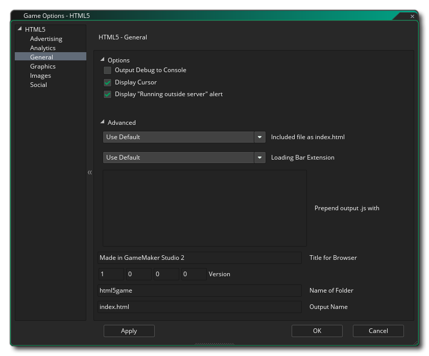
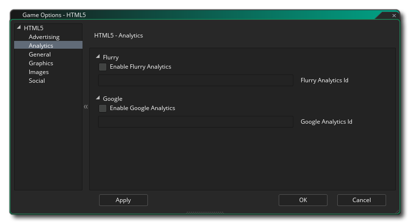
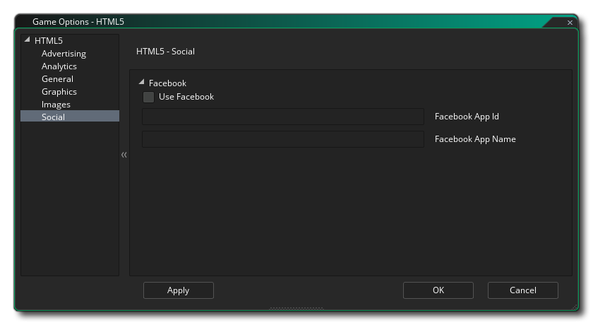

This section outlines the different options available to you that control how your HTML5 game projects will be compiled. The different sections are:

In this section you have fields to fill in the following information about your game:
- Browser Title: Here you can give text to be used for the title bar of the tab for your game in the browser.
- Version: The version number for you project.
- Name of folder: The name for the folder where your HTML5 game files will be stored (default is "html5game").
- Output Name: This is the output HTML file name and can be changed to something other than the default "index.html".
Below the game information fields you have the following options too:
- Output Debug To Console: This will send all debug output to the JS console of your browser. This is off by default.
- Display Cursor: This will disable the mouse cursor when it is over the game canvas. This is on by default.
- Display "Running Outside Server" Alert: If you are testing a game locally (ie: clicking on the index file from your computer rather than a server - not recommended), then you normally get a warning informing you that things won't work as you may expect due to browser security for local files. You can suppress this warning by un-checking this option. It is on by default.
Below the general settings, you have the Advanced options, which are:
- Included file as index.html: This is for adding a custom "index.html" file to use instead of the pre-defined one that GameMaker Studio 2 generates by default. This can be very useful if you have a website design implemented or want to include certain features in all your HTML5 builds. The file to use must be included as an Included File in the game project.
- Loading Bar Extension: This will change the default loading bar for one that has been added to your GameMaker Studio 2 project as an Extension.
- Prepend output .js: Here you can prepend the *.js output with any extra JavaScript necessary for your game. For example, a Chrome Store app may require that you add window.localStorage = undefined; to the output JS, for which you would use this option.

This section permits you to add analytics to your game, permitting you to use certain third-party products to track your game and its sales or plays. You can specify whether to use Flurry Analytics or Google Analytics to track your game. Due to the nature of these functions, you can only have one active at a time, and once you have flagged the Enable Flurry Analytics or Enable Google Analytics you should also add the unique ID that you have been assigned into the appropriate area.
For more general information on analytics, please see the YoYo Knowledge Base, and for information on the functions that you can use to send analytics data, please see here.

Here you can change the following details related to how your game will be displayed (note that not all browsers will display your game in the same way, so test these options on as many browsers as possible to make sure that they have the desired effect):
- Allow switching to fullscreen: Checking this will allow the user to toggle the game from windowed to fullscreen mode using <CTRL> + <CMD> + <F> on Mac and F10 on Windows. This is on by default.
- Interpolate colours between pixels: Turns on interpolation, which basically "smooths" pixels. for crisp pixel graphics, it should be off, but if you have nice alpha blends and smoothed edge graphics it is better left on. Default is off.
- Center the game in the browser: Checking this will automatically center the game screen within the browser running the game.
- Use Built In Particles This option will export the sprites required for the built in particle system along with your game. These sprites are stored in individual texture pages, meaning that they are not the most efficient method of generating particles for this platform, therefore it is recommended that (unless using WebGL) you un-check this option and use your own particle sprites which will be stored on the main texture pages all together for your game.
- WebGL: Choose whether to switch off WebGL support, make it optional (auto-detect), or make it a requirement for your game. It should be noted that to test performance under all circumstances, you should have this as disabled, then normally set it to auto-detect for publishing. Making it a requirement may reduce considerably the compatibility that your game has with different browser types.
- Scaling: Your game can be configured to scale the draw canvas automatically to maintain the aspect ratio within the browser, or you can select to have it stretch to fit. The stretch to fit option will not full screen the game in the browser, but rather stretch what is drawn to fit the canvas size, as defined by the first room of the game.
Finally there is the option to set the size of the Texture Page. The default (and most compatible) size is 2048x2048, but you can choose from anywhere between 256x256 up to 8192x8192. There is also a button marked Preview which will generate the texture pages for this platform and then open a window so that you can see how they look. This can be very useful if you wish to see how the texture pages are structured and to prevent having texture pages larger (or smaller) than necessary.
NOTE: Be aware that the larger the size of the texture page, the less compatible your game will be.

This section is where you can define the favicon and the Splash Screen. The icon should be authored as an *.ico file and can be 16x16, 32x32, 48x48, or 64x64 pixels in size, and 8-bit, 24-bit, or 32-bit in colour depth. The splash screen should be the size of the canvas that is going to hold your game and will override any loading bars if you tick the Use Splash Screen option (ie: you can have a loading bar, OR a splash screen, but not both). Smaller or larger images are permitted but will be scaled to fit.
It is worth noting that GameMaker Studio 2 has a Project Image Generator tool which can be used to automatically create all the images required for all the different target platforms your game is being compiled to. If you use this tool, you should revise the images created to ensure that they are what you require.

The social tab is used for setting up Facebook communication in your game. If you require the Facebook functions, you need to click the "Use Facebook" checkbox and then supply the Facebook App ID and Facebook App Display Name. Note that all Facebook functionality is accessed via an extension, and when you first check the Use Facebook box you will be prompted to download and install the Facebook extension from the Marketplace (you may need to log into your YoYo Account before it can be downloaded).